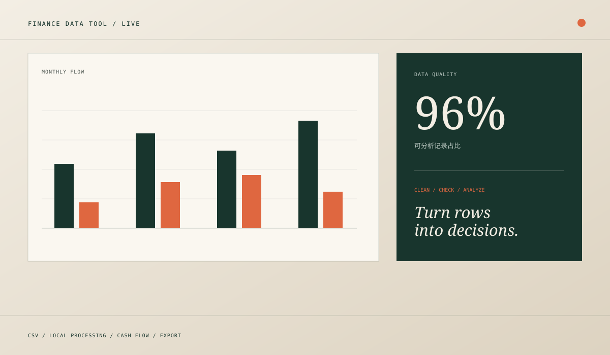
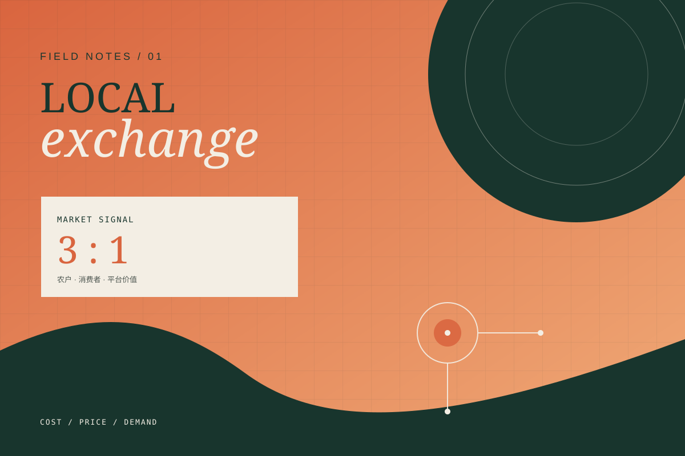
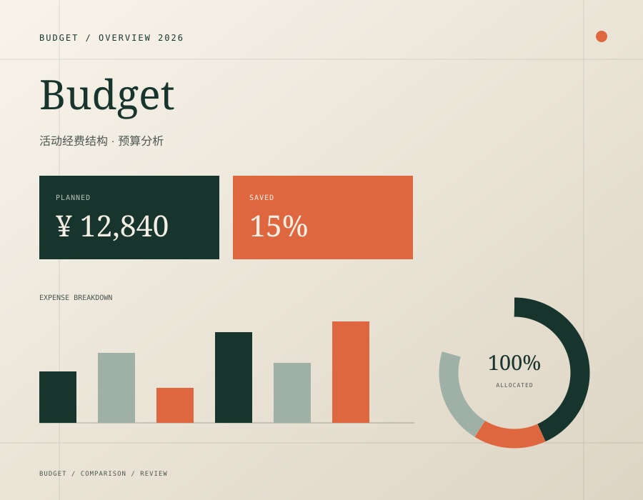
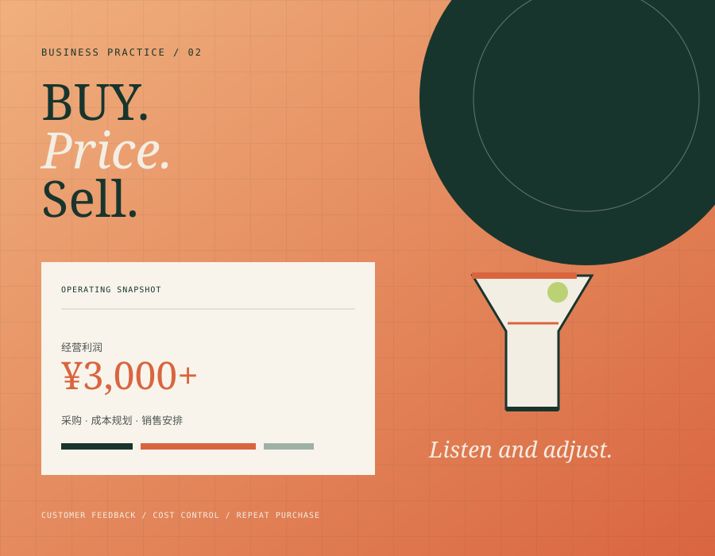

INTERACTIVE TOOL / 04
财务流水清洗与分析工具
在浏览器本地完成 CSV 导入、字段识别、日期与金额清洗、重复和异常检查，并生成月度现金流、支出分类和可导出的分析结果。
打开数据工具围绕问卷分析、成本定价、预算管理和校园经营，记录从原始数据到业务判断的完整过程。
下载岗位简历
在浏览器本地完成 CSV 导入、字段识别、日期与金额清洗、重复和异常检查，并生成月度现金流、支出分类和可导出的分析结果。
打开数据工具
担任财务负责人，设计并发放 150 份问卷，建立成本测算与定价模型，整理 50+ 笔试运行交易记录。

把活动经费从流水式记录，重组为可比较、可追踪的预算结构。

参与经营项目并负责采购、成本规划、销售安排和客户回访，通过反馈调整经营方式。